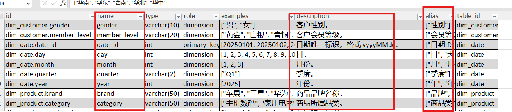
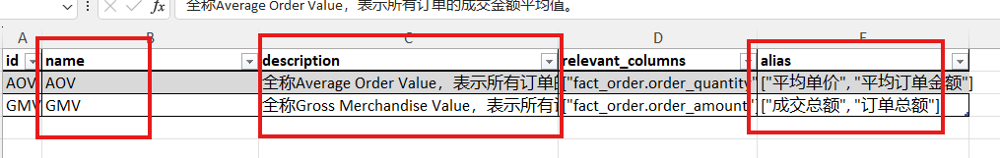
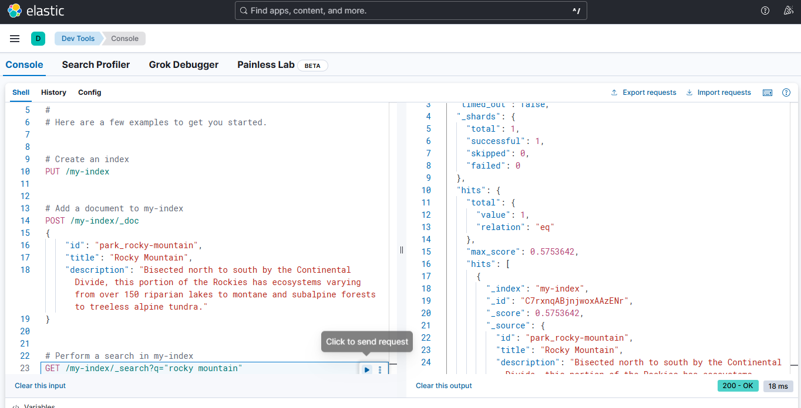
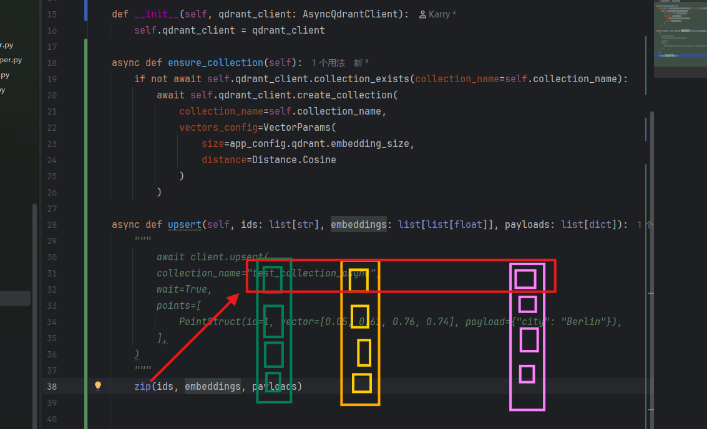
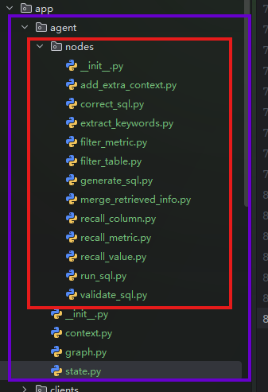

# 从自然语言到 SQL（NL2SQL）
经典情况下是将数据库所有的表结构全部发到模型，但是那样会影响大模型，因此需要一个 RAG 向量存储，根据自然语言抽取关键信息，从向量数据库中检索最关键的表结构。然后通过指定的结构生成 SQL。这是这部系统的核心所在。
# 项目架构
主要是通过 MySQL 作为存储结构化元数据信息，结合 Qdrant 构建语义向量索引，通过 Elasticsearch 构建全文索引，根据自然语言提问，向量化之后进行相关度检索，召回相关表、字段及其指标定义，再将元数据和用户问题一起输入到大模型生成 SQL，最终完成查询返回。
# 元数据
元数据就是对应数据库仓库的说明书。
数据仓库中存放的是真实业务数据，例如订单、商品、客户、地区等信息。
但大模型本身并不知道数据仓库中有哪些表、每张表有哪些字段、字段是什么意思，以及表之间有什么关系。
因此，我们需要通过元数据把这些结构和含义告诉大模型，让大模型先 “看懂数据库”，再根据用户的问题生成正确的 SQL。
# 元数据的召回
# column_info 的召回

这些是很多表中字段的详细信息，实际上就是在描述字段，可能包含了多张表，标红的是需要向量化的。那么，一个字段，只向量化一个描述不就行了吗，为什么还需要向量化三个？这是为了提高召回率。
# metric_info 的召回

# 全文检索
一般会把字段的真实数据作为全文检索，比如查长春市的 xxx，那数据库中是 “长春市” 还是 “长春”？全文检索就是去确认到底是哪个关键字。在语义空间中 “长春” 和 “长春市” 离的很近，但是精确筛选的时候，“长春” 和 “长春市” 却相去甚远。
什么东西适合做全文索引？就是那些有可能成为过滤条件的字段就适合做全文索引。
# TF-IDF 算法
维基百科：https://zh.wikipedia.org/wiki/Tf-idf
# uv 依赖
uv add fastapi[standard] sqlalchemy asyncmy qdrant-client "elasticsearch[async]>=8,<9" langchain langchain-huggingface langgraph jieba omegaconf pyyaml loguru cryptography |
# Docker Compose
services: | |
mysql: | |
image: mysql:8.0 | |
container_name: mysql | |
restart: unless-stopped | |
environment: | |
MYSQL_ROOT_PASSWORD: Atguigu.123 | |
MYSQL_USER: atguigu | |
MYSQL_PASSWORD: Atguigu.123 | |
ports: | |
- "3306:3306" | |
volumes: | |
- mysql_data:/var/lib/mysql | |
- ./mysql:/docker-entrypoint-initdb.d | |
command: | |
--character-set-server=utf8mb4 | |
--collation-server=utf8mb4_general_ci | |
elasticsearch: | |
build: ./elasticsearch | |
container_name: elasticsearch | |
restart: unless-stopped | |
environment: | |
discovery.type: single-node | |
xpack.security.enabled: "false" | |
ports: | |
- "9200:9200" | |
volumes: | |
- es_data:/usr/share/elasticsearch/data | |
kibana: | |
image: kibana:8.19.10 | |
container_name: kibana | |
restart: unless-stopped | |
environment: | |
ELASTICSEARCH_HOSTS: http://elasticsearch:9200 | |
ports: | |
- "5601:5601" | |
depends_on: | |
- elasticsearch | |
qdrant: | |
image: qdrant/qdrant:v1.16 | |
container_name: qdrant | |
restart: unless-stopped | |
ports: | |
- "6333:6333" # HTTP | |
- "6334:6334" # gRPC | |
volumes: | |
- qdrant_data:/qdrant/storage | |
embedding: | |
image: ghcr.io/huggingface/text-embeddings-inference:cpu-1.8 | |
container_name: embedding | |
restart: unless-stopped | |
ports: | |
- "8081:80" | |
environment: | |
MODEL_ID: /models/bge-large-zh-v1.5 | |
MAX_CONCURRENT_REQUESTS: "16" | |
MAX_BATCH_TOKENS: "16384" | |
volumes: | |
- ./embedding/bge-large-zh-v1.5:/models/bge-large-zh-v1.5 | |
volumes: | |
mysql_data: | |
es_data: | |
qdrant_data: |
其中：
mysql: | |
image: mysql:8.0 | |
container_name: mysql | |
restart: unless-stopped | |
environment: | |
MYSQL_ROOT_PASSWORD: Atguigu.123 | |
MYSQL_USER: atguigu | |
MYSQL_PASSWORD: Atguigu.123 | |
ports: | |
- "3306:3306" | |
volumes: | |
- mysql_data:/var/lib/mysql | |
- ./mysql:/docker-entrypoint-initdb.d | |
command: | |
--character-set-server=utf8mb4 | |
--collation-server=utf8mb4_general_ci |
# 一个 Compose 镜像中的基本组成
一般来说，会包含如下一些设置：
- image 镜像名称
- 容器名称
- 重启策略
- 环境变量
- 端口映射
- 目录卷的映射
- command 额外参数
# 策略重启
每一个这样的称之为一个容器，然后这个 restart 称之为一个重启策略， unless-stopped 这个的含义就是，如果是我手动结束的，那就不用重启，其他情况需要重启。
# 容器内环境变量
environment: | |
MYSQL_ROOT_PASSWORD: Atguigu.123 | |
MYSQL_USER: atguigu | |
MYSQL_PASSWORD: Atguigu.123 |
# 命名卷挂载至真实路径
volumes: | |
- mysql_data:/var/lib/mysql | |
- ./mysql:/docker-entrypoint-initdb.d |
mysql_data 称之为命名卷，而后面的 /var/lib/mysql 称之为真实路径
这个是为了保存 MySQL 数据。MySQL 的表、库、索引等真实文件都在容器里的 /var/lib/mysql 。如果不挂载，容器删掉后数据可能也没了；挂载到 mysql_data 后，重新创建容器，原来的数据库还能继续用。
相当于把 /var/lib/mysql 映射到了 mysql_data 。
/docker-entrypoint-initdb.d 是初始化执行部分，那么执行什么呢，其实就是去执行 ./mysql 这个目录下的一些文件，实际上，本质就是做初始化，这个目录下面存储就是初始化 SQL 脚本。
# 端口转发
ports: | |
- "3306:3306" |
将虚拟机的端口映射至物理机。
# 带有 IK 分词器的 Elasticsearch
FROM elasticsearch:8.19.10 | |
USER root | |
COPY plugins/elasticsearch-analysis-ik-8.19.10.zip /tmp/ | |
RUN /usr/share/elasticsearch/bin/elasticsearch-plugin install --batch \ | |
file:///tmp/elasticsearch-analysis-ik-8.19.10.zip | |
RUN chown -R elasticsearch:elasticsearch /usr/share/elasticsearch/plugins | |
USER elasticsearch |
# kibana
Kibana 是一个开源的数据可视化与探索平台，主要用于配合 Elasticsearch 使用。
它的核心作用可以概括为：
- 可视化：把 Elasticsearch 里的数据做成图表、仪表盘。
- 探索：通过搜索和过滤，快速查看、分析日志或业务数据。
- 管理：提供对 Elasticsearch 的索引、监控等管理界面。
# 启动 Compose
进入 yaml 所在目录，执行：
docker compose up -d |
# 现在，出发吧
# 项目结构
data-agent/ | |
├── app/ # 代码目录 | |
│ ├── agent/ # 智能体相关逻辑 | |
│ ├── api/ # 对外接口（HTTP / RPC） | |
│ ├── clients/ # 数据库 / 外部服务客户端 | |
│ ├── conf/ # 配置类 | |
│ ├── core/ # 基础设施、通用能力 | |
│ ├── models/ # 数据库实体类（ORM Model） | |
│ ├── entities/ # 业务实体类（Domain Entity） | |
│ ├── prompt/ # 提示词工具（Prompt Builder / Loader） | |
│ ├── repositories/ # Repo 层（数据库底层查询） | |
│ ├── scripts/ # 脚本（初始化 / 迁移 / 工具） | |
│ └── services/ # Service 层（业务逻辑） | |
│ | |
├── conf/ # 配置文件（YAML / ENV 等） | |
│ | |
├── docker/ # 开发环境 | |
│ ├── elasticsearch/ | |
│ ├── embedding/ | |
│ └── mysql/ | |
│ | |
├── logs/ # 日志目录 | |
└── prompts/ # 提示词目录（静态 Prompt） |
# 通过 OmegaConf 加载 yaml
注意：py 的相对路径是，相对于谁执行的那个路径，并不是代码便携那个文件的相对路径，简单一点说，它是相对于 main 方法那目录，或者说是启动 py 程序所属在的那个目录
from pathlib import Path | |
from omegaconf import OmegaConf | |
config_file = Path(__file__).parents[2] / "conf" / "app_config.yaml" | |
conf = OmegaConf.load(config_file) |
# 但能不能更优雅的访问？
name: zhangsan | |
age: 25 | |
height: 1.8 | |
address: | |
street: "123 Main St" | |
city: "Anytown" | |
state: "CA" | |
zip: "12345" |
from pathlib import Path | |
from omegaconf import OmegaConf | |
@dataclass | |
class Address: | |
street: str | |
city: str | |
state: str | |
zip: str | |
@dataclass | |
class AppConfig: | |
name: str | |
age: int | |
height: float | |
address: Address | |
config_file = Path(__file__).parents[2] / "conf" / "app_config.yaml" | |
content = OmegaConf.load(config_file) | |
struct = OmegaConf.structured(AppConfig) | |
app_conf:AppConfig = OmegaConf.to_object(OmegaConf.merge(struct, content)) | |
print(app_conf.address.street) |
# 最终的代码
from dataclasses import dataclass | |
from pathlib import Path | |
from omegaconf import OmegaConf | |
@dataclass | |
class File: | |
enable: bool | |
level: str | |
path: str | |
rotation: str | |
retention: str | |
@dataclass | |
class Console: | |
enable: bool | |
level: str | |
@dataclass | |
class LoggingConfig: | |
file: File | |
console: Console | |
# 数据库配置 | |
@dataclass | |
class DBConfig: | |
host: str | |
port: int | |
user: str | |
password: str | |
database: str | |
@dataclass | |
class QdrantConfig: | |
host: str | |
port: int | |
embedding_size: int | |
@dataclass | |
class EmbeddingConfig: | |
host: str | |
port: int | |
model: str | |
@dataclass | |
class ESConfig: | |
host: str | |
port: int | |
index_name: str | |
@dataclass | |
class LLMConfig: | |
model_name: str | |
api_key: str | |
base_url: str | |
@dataclass | |
class AppConfig: | |
logging: LoggingConfig | |
db_meta: DBConfig | |
db_dw: DBConfig | |
qdrant: QdrantConfig | |
embedding: EmbeddingConfig | |
es: ESConfig | |
llm: LLMConfig | |
config_file = Path(__file__).parents[2] / 'conf' / 'app_config.yaml' | |
context = OmegaConf.load(config_file) | |
schema = OmegaConf.structured(AppConfig) | |
app_config: AppConfig = OmegaConf.to_object(OmegaConf.merge(schema, context)) |
# Qdrant 向量数据库
from qdrant_client import QdrantClient | |
from qdrant_client.models import Distance, VectorParams | |
from qdrant_client.models import PointStruct | |
from app.conf.app_config import QdrantConfig, app_config | |
class QdrantClientManager: | |
def __init__(self, config: QdrantConfig): | |
self.client: QdrantClient | None = None | |
self.config: QdrantConfig = config | |
def _get_url(self): | |
return f"http://{self.config.host}:{self.config.port}" | |
def init(self): | |
self.client = QdrantClient(url=self._get_url()) | |
def close(self): | |
self.client.close() | |
qdrant_client_manager = QdrantClientManager(app_config.qdrant) | |
if __name__ == '__main__': | |
qdrant_client_manager.init() | |
client = qdrant_client_manager.client | |
client.create_collection( | |
collection_name="test_collection", | |
vectors_config=VectorParams(size=4, distance=Distance.COSINE), | |
) | |
operation_info = client.upsert( | |
collection_name="test_collection", | |
wait=True, | |
points=[ | |
PointStruct(id=1, vector=[0.05, 0.61, 0.76, 0.74], payload={"city": "Berlin"}), | |
PointStruct(id=2, vector=[0.19, 0.81, 0.75, 0.11], payload={"city": "London"}), | |
PointStruct(id=3, vector=[0.36, 0.55, 0.47, 0.94], payload={"city": "Moscow"}), | |
PointStruct(id=4, vector=[0.18, 0.01, 0.85, 0.80], payload={"city": "New York"}), | |
PointStruct(id=5, vector=[0.24, 0.18, 0.22, 0.44], payload={"city": "Beijing"}), | |
PointStruct(id=6, vector=[0.35, 0.08, 0.11, 0.44], payload={"city": "Mumbai"}), | |
], | |
) | |
search_result = client.query_points( | |
collection_name="test_collection", | |
query=[0.2, 0.1, 0.9, 0.7], | |
with_payload=False, | |
limit=3 | |
).points | |
print(search_result) |
# 通过协程改造为异步 manager
import asyncio | |
from qdrant_client import AsyncQdrantClient | |
from qdrant_client.models import Distance, VectorParams | |
from qdrant_client.models import PointStruct | |
from app.conf.app_config import QdrantConfig, app_config | |
class QdrantClientManager: | |
def __init__(self, config: QdrantConfig): | |
self.client: AsyncQdrantClient | None = None | |
self.config: QdrantConfig = config | |
def _get_url(self): | |
return f"http://{self.config.host}:{self.config.port}" | |
def init(self): | |
self.client = AsyncQdrantClient(url=self._get_url()) | |
async def close(self): | |
await self.client.close() | |
qdrant_client_manager = QdrantClientManager(app_config.qdrant) | |
if __name__ == '__main__': | |
qdrant_client_manager.init() | |
client = qdrant_client_manager.client | |
async def test(): | |
await client.create_collection( | |
collection_name="test_collection_async", | |
vectors_config=VectorParams(size=4, distance=Distance.COSINE), | |
) | |
await client.upsert( | |
collection_name="test_collection_async", | |
wait=True, | |
points=[ | |
PointStruct(id=1, vector=[0.05, 0.61, 0.76, 0.74], payload={"city": "Berlin"}), | |
PointStruct(id=2, vector=[0.19, 0.81, 0.75, 0.11], payload={"city": "London"}), | |
PointStruct(id=3, vector=[0.36, 0.55, 0.47, 0.94], payload={"city": "Moscow"}), | |
PointStruct(id=4, vector=[0.18, 0.01, 0.85, 0.80], payload={"city": "New York"}), | |
PointStruct(id=5, vector=[0.24, 0.18, 0.22, 0.44], payload={"city": "Beijing"}), | |
PointStruct(id=6, vector=[0.35, 0.08, 0.11, 0.44], payload={"city": "Mumbai"}), | |
], | |
) | |
search_result = await client.query_points( | |
collection_name="test_collection_async", | |
query=[0.2, 0.1, 0.9, 0.7], | |
with_payload=False, | |
limit=3 | |
) | |
print(search_result.points) | |
asyncio.run(test()) |
AsyncQdrantClient 是一个异步客户端，
# Elasticsearch
index 相当于一个大表或者说是大桶，index 下面存储着 documents 文档，文档是由 JSON 组成的。
一个文档如下所示：
{ | |
"_index": "my-first-elasticsearch-index", | |
"_id": "DyFpo5EBxE8fzbb95DOa", | |
"_version": 1, | |
"_seq_no": 0, | |
"_primary_term": 1, | |
"found": true, | |
"_source": { | |
"email": "john@smith.com", | |
"first_name": "John", | |
"last_name": "Smith", | |
"info": { | |
"bio": "Eco-warrior and defender of the weak", | |
"age": 25, | |
"interests": [ | |
"dolphins", | |
"whales" | |
] | |
}, | |
"join_date": "2024/05/01" | |
} | |
} |
用户数据存储在 _source 之下
# 元数据
元数据指的是以下划线为开头的那个字段。
# 映射和数据类型
- 动态映射：不提前定义字段类型，直接把文档丢给 Elasticsearch，它自己猜：看到 “age”: 25，猜成 integer、看到 “name”: “张三”，猜成 text + keyword、看到 “2024-01-01”，猜成 date，原文说：“might yield suboptimal results” —— 可能不是最优结果。
- 明确的定义映射：提前手动定义好每个字段的类型和索引方式，原文说：“Recommended for production use cases” —— 生产环境推荐用这种。
# kibana：ES 的可视化工具

# 创建客户端
from elasticsearch import AsyncElasticsearch | |
from app.conf.app_config import ESConfig, app_config | |
class ESClientManager: | |
def __init__(self, config: ESConfig): | |
self.config: ESConfig = config | |
self.client: AsyncElasticsearch | None = None | |
def _get_url(self): | |
return f"http://{self.config.host}:{self.config.port}" | |
def init(self): | |
self.client = AsyncElasticsearch( | |
hosts=[self._get_url()] | |
) | |
async def close(self): | |
if self.client: | |
await self.client.close() | |
es_client_manager = ESClientManager(app_config.es) | |
if __name__ == '__main__': | |
es_client_manager.init() | |
client = es_client_manager.client | |
async def test(): | |
# 创建索引 | |
await client.indices.create(index="test_index", ignore=400) | |
await client.index( | |
index="books", | |
document={ | |
"title": "The Great Gatsby", | |
"author": "F. Scott Fitzgerald", | |
"date": "1925-04-10", | |
"summary": "A novel set in the Jazz Age that tells the story of Jay Gatsby's unrequited love for Daisy Buchanan.", | |
} | |
) | |
resp = await client.search( | |
index="books", | |
) | |
print(resp) | |
await client.close() | |
import asyncio | |
asyncio.run(test()) |
# 文本嵌入模型（BAAI）
from langchain_openai import OpenAIEmbeddings | |
from app.conf.app_config import EmbeddingConfig, app_config | |
class EmbeddingClientManager: | |
def __init__(self, config: EmbeddingConfig): | |
self.client: OpenAIEmbeddings | None = None | |
self.config = config | |
def _get_url(self): | |
return f"http://{self.config.host}:{self.config.port}/v1" | |
def init(self): | |
self.client = OpenAIEmbeddings( | |
model="tei", | |
base_url=self._get_url(), | |
api_key="dummy", | |
check_embedding_ctx_length=False, | |
) | |
embedding_client_manager = EmbeddingClientManager(app_config.embedding) | |
if __name__ == '__main__': | |
embedding_client_manager.init() | |
client = embedding_client_manager.client | |
text = "Hello, world!" | |
embedding = client.embed_query(text) | |
print("维度:", len(embedding)) | |
print("前10维:", embedding[:10]) |
# SQLAlchemy
# 自动事务
from sqlalchemy.orm import Session | |
with Session(engine) as session: | |
spongebob = User( | |
name="spongebob", | |
fullname="Spongebob Squarepants", | |
addresses=[Address(email_address="spongebob@sqlalchemy.org")], | |
) | |
sandy = User( | |
name="sandy", | |
fullname="Sandy Cheeks", | |
addresses=[ | |
Address(email_address="sandy@sqlalchemy.org"), | |
Address(email_address="sandy@squirrelpower.org"), | |
], | |
) | |
patrick = User(name="patrick", fullname="Patrick Star") | |
session.add_all([spongebob, sandy, patrick]) | |
session.commit() |
自动事务指的是我们不需要显示的开启事务，但是当连接被释放时，会执行回滚操作来结束该事务。因此，不提交是不会落盘的。这称之为：BEGIN (implicit)
https://docs.sqlalchemy.org/en/20/tutorial/dbapi_transactions.html#getting-a-connection
隐式开启事务：
BEGIN (implicit) | |
INSERT INTO user_account (name, fullname) VALUES (?, ?) RETURNING id | |
[...] ('spongebob', 'Spongebob Squarepants') | |
INSERT INTO user_account (name, fullname) VALUES (?, ?) RETURNING id | |
[...] ('sandy', 'Sandy Cheeks') | |
INSERT INTO user_account (name, fullname) VALUES (?, ?) RETURNING id | |
[...] ('patrick', 'Patrick Star') | |
INSERT INTO address (email_address, user_id) VALUES (?, ?) RETURNING id | |
[...] ('spongebob@sqlalchemy.org', 1) | |
INSERT INTO address (email_address, user_id) VALUES (?, ?) RETURNING id | |
[...] ('sandy@sqlalchemy.org', 2) | |
INSERT INTO address (email_address, user_id) VALUES (?, ?) RETURNING id | |
[...] ('sandy@squirrelpower.org', 2) | |
COMMIT |
# 引擎与会话
注意，数据库执行引擎必须是单例的，但是会话千万不能是单例的，因为会话会创建事务，事务不能单例。
通常，引擎是一个全局对象，只为特定的数据库服务器创建一次，其配置是通过一个 URL 字符串来完成的，该字符串描述了如何与数据库主机或后端进行连接。
https://docs.sqlalchemy.org/en/20/tutorial/engine.html#establishing-connectivity-the-engine
# 实例管理器
import asyncio | |
from sqlalchemy import text, URL | |
from app.conf.app_config import DBConfig, app_config | |
from sqlalchemy.ext.asyncio import create_async_engine, AsyncEngine, AsyncSession | |
class MySQLClientManager: | |
def __init__(self, config: DBConfig): | |
self.engine: AsyncEngine | None = None | |
self.config = config | |
def _get_url(self): | |
return URL.create( | |
drivername="mysql+asyncmy", | |
username=self.config.user, | |
password=self.config.password, | |
host=self.config.host, | |
port=self.config.port, | |
database=self.config.database, | |
query={"charset": "utf8mb4"} | |
) | |
def init(self): | |
self.engine = create_async_engine( | |
self._get_url(), | |
pool_size=50, | |
) | |
async def close(self): | |
await self.engine.dispose() | |
meta_mysql_client_manager = MySQLClientManager(app_config.db_meta) | |
dw_mysql_client_manager = MySQLClientManager(app_config.db_dw) |
URL.create 是一个 URL 构建器。
mysql+asyncmy 表示使用 MySQL，配合异步驱动。“asyncmy” 需要独立安装。
# Lazy Connecting
我们无需执行任何动作，它天生就支持懒加载。
# text () 构造符
将 SQL 语句转换为文本形式，方便 session.execute 下一步执行。
# 执行查询
if __name__ == '__main__': | |
dw_mysql_client_manager.init() | |
dw_engine = dw_mysql_client_manager.engine | |
async def test(): | |
async with AsyncSession(dw_engine) as session: | |
sql = "select * from fact_order" | |
result = await session.execute(text(sql)) | |
rows = result.fetchall() | |
print(rows) | |
print(f"Total rows: {len(rows)}") | |
print(rows[0][0]) | |
asyncio.run(test()) |
# 如何通过 id 访问？
要给这个结果加上：
result.mappings() |
all：
if __name__ == '__main__': | |
dw_mysql_client_manager.init() | |
dw_engine = dw_mysql_client_manager.engine | |
async def test(): | |
async with AsyncSession(dw_engine) as session: | |
sql = "select * from fact_order" | |
result = await session.execute(text(sql)) | |
result.mappings() | |
rows = result.fetchall() | |
print(rows[0]) | |
print(f"Total rows: {len(rows)}") | |
print(rows[0].region_id) | |
asyncio.run(test()) |
# 引擎的设置
# pool size 连接池大小
self.engine = create_async_engine( | |
self._get_url(), | |
pool_size=50, | |
) |
# 会话的设置
# auto flush 自动刷写
https://docs.sqlalchemy.org/en/20/orm/session_basics.html#flushing
** 在执行 ORM 查询之前，自动把当前 Session 里还没发送到数据库的更改（新增、修改、删除）先 flush 出去，但不 commit。** 这样查询就能看到你刚在 Python 里改过、但还没提交的数据。
对于未提交的事务，进行落盘操作。
# async_sessionmaker
import asyncio | |
from sqlalchemy import text, URL | |
from app.conf.app_config import DBConfig, app_config | |
from sqlalchemy.ext.asyncio import create_async_engine, AsyncEngine, AsyncSession, async_sessionmaker | |
class MySQLClientManager: | |
def __init__(self, config: DBConfig): | |
self.engine: AsyncEngine | None = None | |
self.session_factory = None | |
self.config = config | |
def _get_url(self): | |
return URL.create( | |
drivername="mysql+asyncmy", | |
username=self.config.user, | |
password=self.config.password, | |
host=self.config.host, | |
port=self.config.port, | |
database=self.config.database, | |
query={"charset": "utf8mb4"} | |
) | |
def init(self): | |
self.engine = create_async_engine( | |
self._get_url(), | |
pool_size=50, | |
) | |
self.session_factory = async_sessionmaker( | |
self.engine, | |
expire_on_commit=False, | |
autoflush=True | |
) | |
async def close(self): | |
await self.engine.dispose() | |
meta_mysql_client_manager = MySQLClientManager(app_config.db_meta) | |
dw_mysql_client_manager = MySQLClientManager(app_config.db_dw) | |
if __name__ == '__main__': | |
dw_mysql_client_manager.init() | |
dw_engine = dw_mysql_client_manager.engine | |
async def test(): | |
async with dw_mysql_client_manager.session_factory() as session: | |
sql = "select * from fact_order" | |
result = await session.execute(text(sql)) | |
result.mappings() | |
rows = result.fetchall() | |
print(rows[0]) | |
print(f"Total rows: {len(rows)}") | |
print(rows[0].region_id) | |
asyncio.run(test()) |
# Logger-loguru
from loguru import logger | |
logger.info("Starting the application...") | |
logger.warning("Warning: This is a warning message.") | |
logger.error("Error: This is an error message.") |
# 参数接收
parser = argparse.ArgumentParser( | |
prog="build_meta_knowledge", | |
description='Build meta knowledge.', | |
) | |
parser.add_argument('-c','--config', default="path/to/config.json", help='Input file') | |
args = parser.parse_args() | |
print(f"Using config file: {args.config}") |
# 元数据配置映射结构
# _*_ coding : utf-8 _*_ | |
# @Time : 2026/9/21 10:47 | |
# @Author : KarryLiu | |
# File : meta_config | |
# @Project : data_agent | |
from dataclasses import dataclass | |
from pathlib import Path | |
from typing import Optional | |
@dataclass | |
class ColumnConfig: | |
name: str | |
role: str | |
description: str | |
alias: list[str] | |
sync: bool | |
@dataclass | |
class TableConfig: | |
name: str | |
role: str | |
description: str | |
columns: list[ColumnConfig] | |
@dataclass | |
class MetricConfig: | |
name: str | |
description: str | |
relevant_columns: list[str] | |
alias: list[str] | |
@dataclass | |
class MetaConfig: | |
tables: Optional[list[TableConfig]] = None | |
metrics: Optional[list[MetricConfig]] = None |
# 元数据映射配置文件
tables: | |
- name: dim_region | |
role: dim | |
description: 地区维度表，用于描述订单发生的地理区域信息。 | |
columns: | |
- name: region_id | |
role: primary_key | |
description: 地区唯一标识。 | |
alias: [ 地区ID, 区域ID ] | |
sync: false | |
- name: province | |
role: dimension | |
description: 订单所属的省份名称。 | |
alias: [ 省份, 省, 所在省份 ] | |
sync: true | |
- name: region_name | |
role: dimension | |
description: 订单所属的大区名称，如华东、华南等。 | |
alias: [ 地区, 区域, 大区 ] | |
sync: true | |
- name: country | |
role: dimension | |
description: 地区所属国家名称。 | |
alias: [ 国家, 国家名称 ] | |
sync: true | |
- name: dim_customer | |
role: dim | |
description: 客户维度表，描述下单客户的基本属性。 | |
columns: | |
- name: customer_id | |
role: primary_key | |
description: 客户唯一标识。 | |
alias: [ 客户ID, 用户ID ] | |
sync: false | |
- name: customer_name | |
role: dimension | |
description: 客户名称。 | |
alias: [ 客户名称, 用户名称 ] | |
sync: true | |
- name: gender | |
role: dimension | |
description: 客户性别。 | |
alias: [ 性别 ] | |
sync: true | |
- name: member_level | |
role: dimension | |
description: 客户会员等级。 | |
alias: [ 会员等级, 用户等级 ] | |
sync: true | |
- name: dim_product | |
role: dim | |
description: 商品维度表，描述商品的基本属性信息。 | |
columns: | |
- name: product_id | |
role: primary_key | |
description: 商品唯一标识。 | |
alias: [ 商品ID, 产品ID ] | |
sync: false | |
- name: product_name | |
role: dimension | |
description: 商品名称。 | |
alias: [ 商品名称, 产品名称 ] | |
sync: true | |
- name: category | |
role: dimension | |
description: 商品所属品类。 | |
alias: [ 商品类别, 品类, 分类 ] | |
sync: true | |
- name: brand | |
role: dimension | |
description: 商品品牌名称。 | |
alias: [ 品牌, 品牌名称 ] | |
sync: true | |
- name: dim_date | |
role: dim | |
description: 时间维度表，用于多时间粒度分析。 | |
columns: | |
- name: date_id | |
role: primary_key | |
description: 日期唯一标识，格式 yyyyMMdd。 | |
alias: [ 日期ID, 日期 ] | |
sync: false | |
- name: year | |
role: dimension | |
description: 年份。 | |
alias: [ 年, 年份 ] | |
sync: false | |
- name: quarter | |
role: dimension | |
description: 季度。 | |
alias: [ 季度 ] | |
sync: true | |
- name: month | |
role: dimension | |
description: 月份。 | |
alias: [ 月, 月份 ] | |
sync: false | |
- name: day | |
role: dimension | |
description: 日。 | |
alias: [ 日, 天 ] | |
sync: false | |
- name: fact_order | |
role: fact | |
description: 订单事实表，记录订单数量和金额等核心指标。 | |
columns: | |
- name: order_id | |
role: primary_key | |
description: 订单唯一标识。 | |
alias: [ 订单ID ] | |
sync: false | |
- name: customer_id | |
role: foreign_key | |
description: 关联客户维度的外键。 | |
alias: [ 客户ID, 用户ID ] | |
sync: false | |
- name: product_id | |
role: foreign_key | |
description: 关联商品维度的外键。 | |
alias: [ 商品ID, 产品ID ] | |
sync: false | |
- name: date_id | |
role: foreign_key | |
description: 关联时间维度的外键。 | |
alias: [ 日期, 下单日期 ] | |
sync: false | |
- name: region_id | |
role: foreign_key | |
description: 关联地区维度的外键。 | |
alias: [ 地区ID, 区域ID ] | |
sync: false | |
- name: order_quantity | |
role: measure | |
description: 订单中商品的购买数量。 | |
alias: [ 销量, 购买数量, 件数 ] | |
sync: false | |
- name: order_amount | |
role: measure | |
description: 订单金额。 | |
alias: [ 销售额, 订单金额, 收入 ] | |
sync: false | |
metrics: | |
- name: GMV | |
description: 全称Gross Merchandise Value，表示所有订单的成交金额总和。 | |
relevant_columns: | |
- fact_order.order_amount | |
alias: [ 成交总额, 订单总额 ] | |
- name: AOV | |
description: 全称Average Order Value，表示所有订单的成交金额平均值。 | |
relevant_columns: | |
- fact_order.order_quantity | |
alias: [ 平均单价, 平均订单金额 ] |
# 元数据同步 Boot 文件
# _*_ coding : utf-8 _*_ | |
# @Time : 2026/9/19 15:38 | |
# @Author : KarryLiu | |
# File : build_meta_knowledge | |
# @Project : data_agent | |
import argparse | |
import sys | |
from pathlib import Path | |
from app.core.log import logger | |
from app.services.meta_knowledge_service import MetaKnowledgeService | |
async def build(config_path: Path): | |
meta_knowledge_service = MetaKnowledgeService() | |
await meta_knowledge_service.build(config_path) | |
if __name__ == '__main__': | |
parser = argparse.ArgumentParser( | |
prog="build_meta_knowledge", | |
description='Build meta knowledge.', | |
) | |
parser.add_argument('-c','--config', default="../../conf/meta_conf.yaml", help='Input file') | |
args = parser.parse_args() | |
print(f"Using config file: {args.config}") | |
import asyncio | |
asyncio.run(build(args.config)) |
# 根据表，反查字段类型
show columns from fact_order; |
# 根据表，反查字段实例值
select distinct dim_product.category | |
from dim_product | |
limit 10; |
# 数据同步操作：从数据仓库同步至元数据库
# Boot 脚本
import argparse | |
import sys | |
from pathlib import Path | |
from app.clients.mysql_client_mamager import meta_mysql_client_manager, dw_mysql_client_manager | |
from app.core.log import logger | |
from app.repositories.mysql.dw.dw_mysql_repo import DWMySQLRepo | |
from app.repositories.mysql.meta.meta_mysql_repo import MetaMySQLRepo | |
from app.services.meta_knowledge_service import MetaKnowledgeService | |
async def build(config_path: Path): | |
meta_mysql_client_manager.init() | |
dw_mysql_client_manager.init() | |
async with ( | |
meta_mysql_client_manager.session_factory() as meta_session, | |
dw_mysql_client_manager.session_factory() as dw_session | |
): | |
meta_mysql_repo = MetaMySQLRepo(meta_session) | |
dw_mysql_repo = DWMySQLRepo(dw_session) | |
meta_knowledge_service = MetaKnowledgeService( | |
meta_mysql_repo, | |
dw_mysql_repo | |
) | |
await meta_knowledge_service.build(config_path) | |
await meta_mysql_client_manager.close() | |
await dw_mysql_client_manager.close() | |
if __name__ == '__main__': | |
parser = argparse.ArgumentParser( | |
prog="build_meta_knowledge", | |
description='Build meta knowledge.', | |
) | |
parser.add_argument('-c', '--config', default="../../conf/meta_conf.yaml", help='Input file') | |
args = parser.parse_args() | |
print(f"Using config file: {args.config}") | |
import asyncio | |
asyncio.run(build(args.config)) |
with 可以同时控制两个：
async with ( | |
meta_mysql_client_manager.session_factory() as meta_session, | |
dw_mysql_client_manager.session_factory() as dw_session | |
): |
# 元数据 Repo 层
from sqlalchemy.ext.asyncio import AsyncSession | |
from app.entities.column_info import ColumnInfo | |
from app.entities.table_info import TableInfo | |
from app.repositories.mysql.meta.mappers.column_info_mapper import ColumnInfoMapper | |
from app.repositories.mysql.meta.mappers.table_info_mapper import tableInfoMapper | |
class MetaMySQLRepo: | |
def __init__(self, session: AsyncSession): | |
self.session = session # MySQL session | |
def read(self): | |
pass | |
def write(self): | |
pass | |
def save_table_infos(self, table_infos: list[TableInfo]): | |
self.session.add_all([tableInfoMapper.to_model(table_info) for table_info in table_infos]) | |
def save_column_infos(self, column_infos: list[ColumnInfo]): | |
self.session.add_all([ColumnInfoMapper.to_model(column_info) for column_info in column_infos]) |
# 数仓 Repo 层
from sqlalchemy import text | |
class DWMySQLRepo: | |
def __init__(self, session): | |
self.session = session # MySQL session | |
def read(self): | |
pass | |
def write(self): | |
pass | |
async def get_column_types(self, table_name): | |
sql = f"show columns from {table_name};" | |
result = await self.session.execute(text(sql)) | |
result_dict = result.mappings().fetchall() | |
return {row['Field']: row['Type'] for row in result_dict} | |
async def get_column_examples(self, table_name, col_name): | |
sql = f"select distinct {col_name} from {table_name} limit 10;" | |
result = await self.session.execute(text(sql)) | |
result_dict = result.fetchall() | |
return [row[0] for row in result_dict] | |
# result_dict = result.mappings().fetchall() | |
# return [row[col_name] for row in result_dict] |
二者维护了 session，在需要的时候执行相应的 execute 和 fetchall 。
# 列表推导式
[tableInfoMapper.to_model(table_info) for table_info in table_infos] |
PyCharm 快捷键：compl
# 字典推导式
{row['Field']: row['Type'] for row in result_dict} |
PyCharm 快捷键：compd
# 同步区 Service 层（未完成向量化等）
from pathlib import Path | |
from omegaconf import OmegaConf | |
from app.conf.meta_config import MetaConfig | |
from app.entities.column_info import ColumnInfo | |
from app.entities.table_info import TableInfo | |
from app.repositories.mysql.dw.dw_mysql_repo import DWMySQLRepo | |
from app.repositories.mysql.meta.meta_mysql_repo import MetaMySQLRepo | |
class MetaKnowledgeService: | |
def __init__(self, meta_mysql_repo: MetaMySQLRepo, dw_mysql_repo: DWMySQLRepo): | |
self.meta_mysql_repo: MetaMySQLRepo = meta_mysql_repo # MetaMySQLRepo | |
self.dw_mysql_repo: DWMySQLRepo = dw_mysql_repo # DWMySQLRepo | |
async def build(self, config_path: Path): | |
config_file = config_path | |
context = OmegaConf.load(config_file) | |
schema = OmegaConf.structured(MetaConfig) | |
meta_config: MetaConfig = OmegaConf.to_object(OmegaConf.merge(schema, context)) | |
# 存在表信息 | |
if meta_config.tables: | |
table_infos: list[TableInfo] = [] | |
column_infos: list[ColumnInfo] = [] | |
# 1. 将表信息和字段信息存储到数据库中（table_info，column_info） | |
for table in meta_config.tables: | |
# table -> table_info | |
table_info = TableInfo( | |
id=table.name, | |
name=table.name, | |
description=table.description, | |
role=table.role, | |
) | |
table_infos.append(table_info) | |
# 查询字段类型 | |
column_types = await self.dw_mysql_repo.get_column_types(table.name) | |
for column in table.columns: | |
# 查询字段取值示例 | |
column_values = await self.dw_mysql_repo.get_column_examples(table.name, column.name) | |
# table.columns -> column_info | |
column_info = ColumnInfo( | |
id=f"{table.name}.{column.name}", | |
name=column.name, | |
description=column.description, | |
alias=column.alias, | |
type=column_types.get(column.name), | |
role=column.role, | |
examples=column_values, | |
table_id=table.name | |
) | |
column_infos.append(column_info) | |
# print(f"table_infos:") | |
# for table_info in table_infos: | |
# print(table_info) | |
# | |
# print("=" * 50) | |
# print(f"column_infos:") | |
# for column_info in column_infos: | |
# print(column_info) | |
# sync with self.meta_mysql_repo.session.begin (): 自动管理事务 | |
async with self.meta_mysql_repo.session.begin(): | |
self.meta_mysql_repo.save_table_infos(table_infos) | |
self.meta_mysql_repo.save_column_infos(column_infos) | |
# 2. 对字段信息（column_info），进行向量化，并存储到向量数据库中（qdrant） | |
# 3. 对指定的维度字段，建立全文索引 | |
pass | |
# 存在指标信息 | |
if meta_config.metrics: | |
# 1. 将指标信息存储到数据库中（metric_info, column_metric） | |
# 2. 对指标信息进行向量化，并存储到向量数据库中（qdrant） | |
pass |
# 为了将 ORM 与 Service 解耦，诞生两组实体与一组转换工具
if meta_config.tables: | |
table_infos: list[TableInfo] = [] | |
column_infos: list[ColumnInfo] = [] | |
# 1. 将表信息和字段信息存储到数据库中（table_info，column_info） | |
for table in meta_config.tables: | |
# table -> table_info | |
table_info = TableInfo( | |
id=table.name, | |
name=table.name, | |
description=table.description, | |
role=table.role, | |
) | |
table_infos.append(table_info) | |
# 查询字段类型 | |
column_types = await self.dw_mysql_repo.get_column_types(table.name) | |
for column in table.columns: | |
# 查询字段取值示例 | |
column_values = await self.dw_mysql_repo.get_column_examples(table.name, column.name) | |
# table.columns -> column_info | |
column_info = ColumnInfo( | |
id=f"{table.name}.{column.name}", | |
name=column.name, | |
description=column.description, | |
alias=column.alias, | |
type=column_types.get(column.name), | |
role=column.role, | |
examples=column_values, | |
table_id=table.name | |
) | |
column_infos.append(column_info) | |
# print(f"table_infos:") | |
# for table_info in table_infos: | |
# print(table_info) | |
# | |
# print("=" * 50) | |
# print(f"column_infos:") | |
# for column_info in column_infos: | |
# print(column_info) | |
# sync with self.meta_mysql_repo.session.begin (): 自动管理事务 | |
async with self.meta_mysql_repo.session.begin(): | |
self.meta_mysql_repo.save_table_infos(table_infos) | |
self.meta_mysql_repo.save_column_infos(column_infos) | |
# 2. 对字段信息（column_info），进行向量化，并存储到向量数据库中（qdrant） | |
# 3. 对指定的维度字段，建立全文索引 | |
pass |
整个 if 中用的是 dataclass 实体，不是 ORM 实体
# ORM2DC 和 DC2ORM
from dataclasses import asdict | |
from app.entities.table_info import TableInfo | |
from app.models.table_info import TableInfoMySQL | |
class tableInfoMapper: | |
@staticmethod | |
def to_entity(table_info_mysql: TableInfoMySQL) -> TableInfo: | |
return TableInfo( | |
id=table_info_mysql.id, | |
name=table_info_mysql.name, | |
description=table_info_mysql.description, | |
role=table_info_mysql.role, | |
) | |
@staticmethod | |
def to_model(table_info: TableInfo) -> TableInfoMySQL: | |
return TableInfoMySQL( | |
# 解构语法，实际上就是将 table_info 对象的属性转换为字典，然后传递给 TableInfoMySQL 的构造函数 | |
**asdict(table_info) | |
) |
其他实体基本上没什么区别。
# 解构语法
return TableInfoMySQL( | |
# 解构语法，实际上就是将 table_info 对象的属性转换为字典，然后传递给 TableInfoMySQL 的构造函数 | |
**asdict(table_info) | |
) |
执行了 **asdict(table_info) 之后，他会变成一组 KV，就像上面那种形态：
return TableInfo( | |
id=table_info_mysql.id, | |
name=table_info_mysql.name, | |
description=table_info_mysql.description, | |
role=table_info_mysql.role, | |
) |
Return the fields of a dataclass instance as a new dictionary mapping field names to field values
将数据类实例的字段作为一个新的字典返回，该字典将字段名映射到字段值
# 字典解包运算符
** 是 Python 的 字典解包运算符，作用在右边的 asdict(table_info) 上
比如：
{ | |
"id": "t001", | |
"name": "user_info", | |
"role": "dim", | |
"description": "用户信息表" | |
} |
解包成：
TableInfoMySQL( | |
id="t001", | |
name="user_info", | |
role="dim", | |
description="用户信息表" | |
) |
# 基于 With 的自动管理事务
async with self.meta_mysql_repo.session.begin(): | |
self.meta_mysql_repo.save_table_infos(table_infos) | |
self.meta_mysql_repo.save_column_infos(column_infos) |
session.begin() 实际上是开启了一个事务，为 with 帮我自动提交了，如果中间失败了，也会帮我们自动回滚。
# 字段信息（Key - 描述、别名等）向量化
await self.column_qdrant_repo.ensure_collection() | |
points: list[dict] = [] | |
# 这里就是将字段的 name、description、alias 都作为 embedding_text 进行向量化 | |
for column_info in column_infos: | |
points.append({ | |
"id": uuid.uuid4(), | |
"embedding_text": column_info.name, | |
"payload": asdict(column_info) | |
}) | |
points.append({ | |
"id": uuid.uuid4(), | |
"embedding_text": column_info.description, | |
"payload": asdict(column_info) | |
}) | |
for alia in column_info.alias: | |
points.append({ | |
"id": uuid.uuid4(), | |
"embedding_text": alia, | |
"payload": asdict(column_info) | |
}) | |
embeddings: list[list[float]] = [] | |
embedding_text = [point['embedding_text'] for point in points] | |
embedding_batch_size = 20 # 每批次处理的文本数量 | |
for i in range(0, len(embedding_text), embedding_batch_size): | |
batch_texts = embedding_text[i:i + embedding_batch_size] | |
batch_embedding_result = await self.embedding_client.aembed_documents(batch_texts) | |
embeddings.extend(batch_embedding_result) | |
ids = [point['id'] for point in points] | |
payloads = [point['payload'] for point in points] | |
await self.column_qdrant_repo.upsert( | |
ids, | |
embeddings, | |
payloads | |
) |
# Zip 拉链法
zip(ids, embeddings, payloads) |

# 向 Qdrant 写数据
async def upsert(self, ids: list[str], embeddings: list[list[float]], payloads: list[dict], batch_size: int = 10): | |
""" | |
await client.upsert( | |
collection_name="test_collection_async", | |
wait=True, | |
points=[ | |
PointStruct(id=1, vector=[0.05, 0.61, 0.76, 0.74], payload={"city": "Berlin"}), | |
], | |
) | |
""" | |
points: list[PointStruct] = [ | |
PointStruct(id=id, vector=embedding, payload=payload) | |
for (id, embedding, payload) in zip(ids, embeddings, payloads) | |
] | |
for i in range(0, len(points), batch_size): | |
batch_points = points[i:i + batch_size] | |
await self.qdrant_client.upsert( | |
collection_name=self.collection_name, | |
points=batch_points | |
) |
# 为字段加上全文索引
# Repo
from dataclasses import asdict | |
from elasticsearch import AsyncElasticsearch | |
class ValueESRepo: | |
index_name = "value_index" | |
index_mappings = { | |
"dynamic": False, | |
"properties": { | |
"id": {"type": "keyword"}, | |
"value": {"type": "text", "analyzer": "ik_max_word", "search_analyzer": "ik_max_word"}, | |
"column_id": {"type": "keyword"} | |
} | |
} | |
def __init__(self, client: AsyncElasticsearch): | |
self.client = client | |
async def ensure_index(self): | |
if not await self.client.indices.exists(index=self.index_name): | |
await self.client.indices.create( | |
index=self.index_name, | |
mappings=self.index_mappings | |
) | |
async def index(self, value_infos, batch_size=20): | |
for i in range(0, len(value_infos), batch_size): | |
batch = value_infos[i:i + batch_size] | |
batch_operations = [] | |
for value_info in batch: | |
batch_operations.append({ | |
"index": { | |
"_index": self.index_name, | |
} | |
}) | |
batch_operations.append(asdict(value_info)) | |
await self.client.bulk(operations=batch_operations) |
# Service
# 3. 对指定的维度字段，建立全文索引 | |
await self.value_es_repo.ensure_index() | |
value_infos: list[ValueInfo] = [] | |
for table in meta_config.tables: | |
for column in table.columns: | |
if column.sync: | |
current_column_values = await self.dw_mysql_repo.get_column_examples( | |
table.name, | |
column.name, | |
limit=999999 | |
) | |
value_infos.extend([ | |
ValueInfo( | |
id=f"{table.name}.{column.name}.{current_column_value}", | |
column_id=f"{table.name}.{column.name}", | |
value=current_column_value, | |
) | |
for current_column_value in current_column_values | |
]) | |
await self.value_es_repo.index(value_infos) |
# 经过整理之后的 Service 代码
# _*_ coding : utf-8 _*_ | |
# @Time : 2026/9/19 16:24 | |
# @Author : KarryLiu | |
# File : meta_knowledge_service | |
# @Project : data_agent | |
import uuid | |
from dataclasses import asdict | |
from pathlib import Path | |
from langchain_huggingface import HuggingFaceEndpointEmbeddings | |
from omegaconf import OmegaConf | |
from app.conf.meta_config import MetaConfig | |
from app.entities.column_info import ColumnInfo | |
from app.entities.table_info import TableInfo | |
from app.entities.value_info import ValueInfo | |
from app.repositories.es.value_es_repo import ValueESRepo | |
from app.repositories.mysql.dw.dw_mysql_repo import DWMySQLRepo | |
from app.repositories.mysql.meta.meta_mysql_repo import MetaMySQLRepo | |
from app.repositories.qdrant.column_qdrant_repo import ColumnQdrantRepo | |
class MetaKnowledgeService: | |
def __init__(self, meta_mysql_repo: MetaMySQLRepo, | |
dw_mysql_repo: DWMySQLRepo, | |
embedding_client: HuggingFaceEndpointEmbeddings, | |
column_qdrant_repo: ColumnQdrantRepo, | |
value_es_repo: ValueESRepo): | |
self.meta_mysql_repo: MetaMySQLRepo = meta_mysql_repo # MetaMySQLRepo | |
self.dw_mysql_repo: DWMySQLRepo = dw_mysql_repo # DWMySQLRepo | |
self.column_qdrant_repo: ColumnQdrantRepo = column_qdrant_repo # ColumnQdrantRepo | |
self.embedding_client: HuggingFaceEndpointEmbeddings = embedding_client # EmbeddingClient | |
self.value_es_repo: ValueESRepo = value_es_repo # ValueESRepo | |
async def _save_tables_to_meta_db(self, meta_config: MetaConfig) -> list[ColumnInfo]: | |
table_infos: list[TableInfo] = [] | |
column_infos: list[ColumnInfo] = [] | |
# 1. 将表信息和字段信息存储到数据库中（table_info，column_info） | |
for table in meta_config.tables: | |
# table -> table_info | |
table_info = TableInfo( | |
id=table.name, | |
name=table.name, | |
description=table.description, | |
role=table.role, | |
) | |
table_infos.append(table_info) | |
# 查询字段类型 | |
column_types = await self.dw_mysql_repo.get_column_types(table.name) | |
for column in table.columns: | |
# 查询字段取值示例 | |
column_values = await self.dw_mysql_repo.get_column_examples(table.name, column.name) | |
# table.columns -> column_info | |
column_info = ColumnInfo( | |
id=f"{table.name}.{column.name}", | |
name=column.name, | |
description=column.description, | |
alias=column.alias, | |
type=column_types.get(column.name), | |
role=column.role, | |
examples=column_values, | |
table_id=table.name | |
) | |
column_infos.append(column_info) | |
# print(f"table_infos:") | |
# for table_info in table_infos: | |
# print(table_info) | |
# | |
# print("=" * 50) | |
# print(f"column_infos:") | |
# for column_info in column_infos: | |
# print(column_info) | |
# sync with self.meta_mysql_repo.session.begin (): 自动管理事务 | |
async with self.meta_mysql_repo.session.begin(): | |
self.meta_mysql_repo.save_table_infos(table_infos) | |
self.meta_mysql_repo.save_column_infos(column_infos) | |
return column_infos | |
async def _save_columns_to_qdrant(self, column_infos: list[ColumnInfo]): | |
await self.column_qdrant_repo.ensure_collection() | |
points: list[dict] = [] | |
# 这里就是将字段的 name、description、alias 都作为 embedding_text 进行向量化 | |
for column_info in column_infos: | |
points.append({ | |
"id": uuid.uuid4(), | |
"embedding_text": column_info.name, | |
"payload": asdict(column_info) | |
}) | |
points.append({ | |
"id": uuid.uuid4(), | |
"embedding_text": column_info.description, | |
"payload": asdict(column_info) | |
}) | |
for alia in column_info.alias: | |
points.append({ | |
"id": uuid.uuid4(), | |
"embedding_text": alia, | |
"payload": asdict(column_info) | |
}) | |
embeddings: list[list[float]] = [] | |
embedding_text = [point['embedding_text'] for point in points] | |
embedding_batch_size = 20 # 每批次处理的文本数量 | |
for i in range(0, len(embedding_text), embedding_batch_size): | |
batch_texts = embedding_text[i:i + embedding_batch_size] | |
batch_embedding_result = await self.embedding_client.aembed_documents(batch_texts) | |
embeddings.extend(batch_embedding_result) | |
ids = [point['id'] for point in points] | |
payloads = [point['payload'] for point in points] | |
await self.column_qdrant_repo.upsert( | |
ids, | |
embeddings, | |
payloads | |
) | |
async def _save_values_to_es(self, meta_config: MetaConfig): | |
await self.value_es_repo.ensure_index() | |
value_infos: list[ValueInfo] = [] | |
for table in meta_config.tables: | |
for column in table.columns: | |
if column.sync: | |
current_column_values = await self.dw_mysql_repo.get_column_examples( | |
table.name, | |
column.name, | |
limit=999999 | |
) | |
value_infos.extend([ | |
ValueInfo( | |
id=f"{table.name}.{column.name}.{current_column_value}", | |
column_id=f"{table.name}.{column.name}", | |
value=current_column_value, | |
) | |
for current_column_value in current_column_values | |
]) | |
await self.value_es_repo.index(value_infos) | |
async def build(self, config_path: Path): | |
config_file = config_path | |
context = OmegaConf.load(config_file) | |
schema = OmegaConf.structured(MetaConfig) | |
meta_config: MetaConfig = OmegaConf.to_object(OmegaConf.merge(schema, context)) | |
# 存在表信息 | |
if meta_config.tables: | |
# 1. 将表信息和字段信息保存到元数据库中 | |
column_infos = await self._save_tables_to_meta_db(meta_config) | |
# 2. 对字段信息（column_info），进行向量化，并存储到向量数据库中（qdrant） | |
await self._save_columns_to_qdrant(column_infos) | |
# 3. 对指定的维度字段，建立全文索引 | |
await self._save_values_to_es(meta_config) | |
# 存在指标信息 | |
if meta_config.metrics: | |
# 1. 将指标信息存储到数据库中（metric_info, column_metric） | |
# 2. 对指标信息进行向量化，并存储到向量数据库中（qdrant） | |
pass |
# 最终的 Service
# _*_ coding : utf-8 _*_ | |
# @Time : 2026/9/19 16:24 | |
# @Author : KarryLiu | |
# File : meta_knowledge_service | |
# @Project : data_agent | |
import uuid | |
from dataclasses import asdict | |
from pathlib import Path | |
from langchain_huggingface import HuggingFaceEndpointEmbeddings | |
from omegaconf import OmegaConf | |
from app.conf.meta_config import MetaConfig | |
from app.entities.column_info import ColumnInfo | |
from app.entities.column_metric import ColumnMetric | |
from app.entities.metric_info import MetricInfo | |
from app.entities.table_info import TableInfo | |
from app.entities.value_info import ValueInfo | |
from app.repositories.es.value_es_repo import ValueESRepo | |
from app.repositories.mysql.dw.dw_mysql_repo import DWMySQLRepo | |
from app.repositories.mysql.meta.meta_mysql_repo import MetaMySQLRepo | |
from app.repositories.qdrant.column_qdrant_repo import ColumnQdrantRepo | |
from app.repositories.qdrant.metric_qdrant_repo import MetricQdrantRepo | |
from app.core.log import logger | |
class MetaKnowledgeService: | |
def __init__(self, meta_mysql_repo: MetaMySQLRepo, | |
dw_mysql_repo: DWMySQLRepo, | |
embedding_client: HuggingFaceEndpointEmbeddings, | |
column_qdrant_repo: ColumnQdrantRepo, | |
value_es_repo: ValueESRepo, | |
metric_qdrant_repo: MetricQdrantRepo | |
): | |
self.meta_mysql_repo: MetaMySQLRepo = meta_mysql_repo # MetaMySQLRepo | |
self.dw_mysql_repo: DWMySQLRepo = dw_mysql_repo # DWMySQLRepo | |
self.column_qdrant_repo: ColumnQdrantRepo = column_qdrant_repo # ColumnQdrantRepo | |
self.embedding_client: HuggingFaceEndpointEmbeddings = embedding_client # EmbeddingClient | |
self.value_es_repo: ValueESRepo = value_es_repo # ValueESRepo | |
self.metric_qdrant_repo: MetricQdrantRepo = metric_qdrant_repo # MetricQdrantRepo | |
async def _save_tables_to_meta_db(self, meta_config: MetaConfig) -> list[ColumnInfo]: | |
table_infos: list[TableInfo] = [] | |
column_infos: list[ColumnInfo] = [] | |
# 1. 将表信息和字段信息存储到数据库中（table_info，column_info） | |
for table in meta_config.tables: | |
# table -> table_info | |
table_info = TableInfo( | |
id=table.name, | |
name=table.name, | |
description=table.description, | |
role=table.role, | |
) | |
table_infos.append(table_info) | |
# 查询字段类型 | |
column_types = await self.dw_mysql_repo.get_column_types(table.name) | |
for column in table.columns: | |
# 查询字段取值示例 | |
column_values = await self.dw_mysql_repo.get_column_examples(table.name, column.name) | |
# table.columns -> column_info | |
column_info = ColumnInfo( | |
id=f"{table.name}.{column.name}", | |
name=column.name, | |
description=column.description, | |
alias=column.alias, | |
type=column_types.get(column.name), | |
role=column.role, | |
examples=column_values, | |
table_id=table.name | |
) | |
column_infos.append(column_info) | |
# print(f"table_infos:") | |
# for table_info in table_infos: | |
# print(table_info) | |
# | |
# print("=" * 50) | |
# print(f"column_infos:") | |
# for column_info in column_infos: | |
# print(column_info) | |
# sync with self.meta_mysql_repo.session.begin (): 自动管理事务 | |
async with self.meta_mysql_repo.session.begin(): | |
self.meta_mysql_repo.save_table_infos(table_infos) | |
self.meta_mysql_repo.save_column_infos(column_infos) | |
return column_infos | |
async def _save_columns_to_qdrant(self, column_infos: list[ColumnInfo]): | |
await self.column_qdrant_repo.ensure_collection() | |
points: list[dict] = [] | |
# 这里就是将字段的 name、description、alias 都作为 embedding_text 进行向量化 | |
for column_info in column_infos: | |
points.append({ | |
"id": uuid.uuid4(), | |
"embedding_text": column_info.name, | |
"payload": asdict(column_info) | |
}) | |
points.append({ | |
"id": uuid.uuid4(), | |
"embedding_text": column_info.description, | |
"payload": asdict(column_info) | |
}) | |
for alia in column_info.alias: | |
points.append({ | |
"id": uuid.uuid4(), | |
"embedding_text": alia, | |
"payload": asdict(column_info) | |
}) | |
embeddings: list[list[float]] = [] | |
embedding_text = [point['embedding_text'] for point in points] | |
embedding_batch_size = 20 # 每批次处理的文本数量 | |
for i in range(0, len(embedding_text), embedding_batch_size): | |
batch_texts = embedding_text[i:i + embedding_batch_size] | |
batch_embedding_result = await self.embedding_client.aembed_documents(batch_texts) | |
embeddings.extend(batch_embedding_result) | |
ids = [point['id'] for point in points] | |
payloads = [point['payload'] for point in points] | |
await self.column_qdrant_repo.upsert( | |
ids, | |
embeddings, | |
payloads | |
) | |
async def _save_values_to_es(self, meta_config: MetaConfig): | |
await self.value_es_repo.ensure_index() | |
value_infos: list[ValueInfo] = [] | |
for table in meta_config.tables: | |
for column in table.columns: | |
if column.sync: | |
current_column_values = await self.dw_mysql_repo.get_column_examples( | |
table.name, | |
column.name, | |
limit=999999 | |
) | |
value_infos.extend([ | |
ValueInfo( | |
id=f"{table.name}.{column.name}.{current_column_value}", | |
column_id=f"{table.name}.{column.name}", | |
value=current_column_value, | |
) | |
for current_column_value in current_column_values | |
]) | |
await self.value_es_repo.index(value_infos) | |
async def _save_metrics_to_meta_db(self, meta_config: MetaConfig) -> list[MetricInfo]: | |
metric_infos: list[MetricInfo] = [] | |
column_metrics: list[ColumnMetric] = [] | |
for metric in meta_config.metrics: | |
metric_infos.append(MetricInfo( | |
id=metric.name, | |
name=metric.name, | |
description=metric.description, | |
relevant_columns=metric.relevant_columns, | |
alias=metric.alias | |
)) | |
for column in metric.relevant_columns: | |
column_metrics.append(ColumnMetric( | |
metric_id=metric.name, | |
column_id=column | |
)) | |
async with self.meta_mysql_repo.session.begin(): | |
await self.meta_mysql_repo.save_metric_infos(metric_infos) | |
await self.meta_mysql_repo.save_column_metrics(column_metrics) | |
return metric_infos | |
async def _save_metrics_to_qdrant(self, metric_infos: list[MetricInfo]): | |
await self.metric_qdrant_repo.ensure_collection() | |
points: list[dict] = [] | |
# 这里就是将字段的 name、description、alias 都作为 embedding_text 进行向量化 | |
for metric_info in metric_infos: | |
points.append({ | |
"id": uuid.uuid4(), | |
"embedding_text": metric_info.name, | |
"payload": asdict(metric_info) | |
}) | |
points.append({ | |
"id": uuid.uuid4(), | |
"embedding_text": metric_info.description, | |
"payload": asdict(metric_info) | |
}) | |
for alia in metric_info.alias: | |
points.append({ | |
"id": uuid.uuid4(), | |
"embedding_text": alia, | |
"payload": asdict(metric_info) | |
}) | |
embeddings: list[list[float]] = [] | |
embedding_text = [point['embedding_text'] for point in points] | |
embedding_batch_size = 20 # 每批次处理的文本数量 | |
for i in range(0, len(embedding_text), embedding_batch_size): | |
batch_texts = embedding_text[i:i + embedding_batch_size] | |
batch_embedding_result = await self.embedding_client.aembed_documents(batch_texts) | |
embeddings.extend(batch_embedding_result) | |
ids = [point['id'] for point in points] | |
payloads = [point['payload'] for point in points] | |
await self.metric_qdrant_repo.upsert( | |
ids, | |
embeddings, | |
payloads | |
) | |
async def build(self, config_path: Path): | |
config_file = config_path | |
context = OmegaConf.load(config_file) | |
schema = OmegaConf.structured(MetaConfig) | |
meta_config: MetaConfig = OmegaConf.to_object(OmegaConf.merge(schema, context)) | |
logger.info("加载元数据配置文件成功") | |
# 存在表信息 | |
if meta_config.tables: | |
# 1. 将表信息和字段信息保存到元数据库中 | |
column_infos = await self._save_tables_to_meta_db(meta_config) | |
logger.info("保存表信息和字段信息到元数据库成功") | |
# 2. 对字段信息（column_info），进行向量化，并存储到向量数据库中（qdrant） | |
await self._save_columns_to_qdrant(column_infos) | |
logger.info("保存字段信息到向量数据库成功") | |
# 3. 对指定的维度字段，建立全文索引 | |
await self._save_values_to_es(meta_config) | |
logger.info("保存字段取值到全文索引成功") | |
# 存在指标信息 | |
if meta_config.metrics: | |
# 1. 将指标信息存储到数据库中（metric_info, column_metric） | |
metric_infos = await self._save_metrics_to_meta_db(meta_config) | |
logger.info("保存指标信息到数据库成功") | |
# 2. 对指标信息进行向量化，并存储到向量数据库中（qdrant） | |
await self._save_metrics_to_qdrant(metric_infos) | |
logger.info("保存指标信息到向量数据库成功") |
# Runtime context 运行时上下文
https://docs.langchain.com/oss/python/langgraph/graph-api#runtime-context
# 匿名函数
graph_builder.add_conditional_edges( | |
source="validate_sql", | |
path=lambda state: "run_sql" if state['error'] is None else "correct_sql" | |
) |
lambda state: "run_sql" if state['error'] is None else "correct_sql" 这个 lambda 接收一个 state，后面使用三元表达做出回复， state['error'] is None 就 "run_sql" ，否则就 "run_sql"
# 也许可以省略的 path_map
graph_builder.add_conditional_edges( | |
source="validate_sql", | |
path=lambda state: "run_sql" if state['error'] is None else "correct_sql", | |
path_map={"run_sql": "run_sql", "correct_sql": "correct_sql"} | |
) |
路由函数中： path=lambda state: "run_sql" if state['error'] is None else "correct_sql", 返沪的的刚好是 correct_sql 与 run_sql，这个和节点名字一致，那就不用写 path_map ，但是这里还是写上了。
# Graph
graph TD; | |
__start__([<p>__start__</p>]):::first | |
extract_keywords(extract_keywords) | |
recall_column(recall_column) | |
recall_value(recall_value) | |
recall_metric(recall_metric) | |
merge_retrieved_info(merge_retrieved_info) | |
filter_metric(filter_metric) | |
filter_table(filter_table) | |
add_extra_context(add_extra_context) | |
generate_sql(generate_sql) | |
validate_sql(validate_sql) | |
correct_sql(correct_sql) | |
run_sql(run_sql) | |
__end__([<p>__end__</p>]):::last | |
__start__ --> extract_keywords; | |
add_extra_context --> generate_sql; | |
correct_sql --> run_sql; | |
extract_keywords --> recall_column; | |
extract_keywords --> recall_metric; | |
extract_keywords --> recall_value; | |
filter_metric --> add_extra_context; | |
filter_table --> add_extra_context; | |
generate_sql --> validate_sql; | |
merge_retrieved_info --> filter_metric; | |
merge_retrieved_info --> filter_table; | |
recall_column --> merge_retrieved_info; | |
recall_metric --> merge_retrieved_info; | |
recall_value --> merge_retrieved_info; | |
validate_sql -.-> correct_sql; | |
validate_sql -.-> run_sql; | |
run_sql --> __end__; | |
classDef default fill:#f2f0ff,line-height:1.2 | |
classDef first fill-opacity:0 | |
classDef last fill:#bfb6fc |

# Python<11 不支持的异步，因为 contextvar 仅在新版本中支持
https://reference.langchain.com/python/langgraph/config/get_stream_writer
from langgraph.runtime import Runtime | |
from app.agent.context import DataAgentContext | |
from app.agent.state import DataAgentState | |
async def add_extra_context(state: DataAgentState, runtime: Runtime[DataAgentContext]): | |
writer = runtime.stream_writer | |
writer("添加额外上下文信息") | |
import asyncio | |
await asyncio.sleep(0.5) |
If you are using Python < 3.11 and are running LangGraph asynchronously,
get_stream_writer()won’t work since it usescontextvarpropagation (only available in Python >= 3.11).
如果您使用的是 Python 3.11 版本并且以异步方式运行 LangGraph，get_stream_writer()将无法工作，因为它使用了contextvar传播（仅在 Python 3.11 中可用）。
小于此版本的推荐升级到最新版本。
# 提取关键词节点 ——Jieba 分词器
提取关键词节点干的就是把用户的问题 query 用 IK 分词器（Jieba）给分割出来，干的活就和它的名字一样，就是分词。
import jieba.analyse | |
from langgraph.runtime import Runtime | |
from app.agent.context import DataAgentContext | |
from app.agent.state import DataAgentState | |
from app.core.log import logger | |
async def extract_keywords(state: DataAgentState, runtime: Runtime[DataAgentContext]): | |
writer = runtime.stream_writer | |
writer("抽取关键词中...") | |
query = state["query"] | |
# 对查询进行分词，只提取指定词性的词 | |
allow_pos = ( | |
"n", # 名词：数据、服务器、表格 | |
"nr", # 人名：张三、李四 | |
"ns", # 地名：北京、上海 | |
"nt", # 机构团体名：政府、学校、某公司 | |
"nz", # 其他专有名词: Unicode、哈希算法、诺贝尔奖 | |
"v", # 动词：运行、开发 | |
"vn", # 名动词：工作、研究 | |
"a", # 形容词：美丽、快速 | |
"an", # 名形词：难度、合法性、复杂度 | |
"eng", # 英文 | |
"i", # 成语 | |
"l", # 常用固定短语 | |
) | |
keywords = jieba.analyse.extract_tags(query, topK=20, withWeight=False, allowPOS=allow_pos) | |
keywords = list(set(keywords + [query])) # 将原始查询也加入关键词列表，并去重 | |
logger.info(f"抽取的关键词: {keywords}") | |
return {"keywords": keywords} |
# 召回列 (column) 节点
召回列 (column) 节点的大致流程是这样的，首先它会接收上一个节点得到的关键词 keywords，还有最初的那个问题 query。
这个关键词 keywords 是通过上一个节点执行得到的，也就是通过经典的 IK 分词器（Jieba）得到的，然后这一个节点呢就是再把那个问题 query 给大模型，它大模型写几个关键词。
然后这不是有两组了吗，一个是 IK 分词器 keywords，一个是 AIkeywords，然后就是把他们俩去重整合一下。
下面就是把 keywords 向量化，去 Qdrant 中查找，然后有可能被多次命中，所以又用了 map 去重。
from langchain_core.output_parsers import JsonOutputParser | |
from langchain_core.prompts import PromptTemplate | |
from langgraph.runtime import Runtime | |
from app.agent.context import DataAgentContext | |
from app.agent.llm import llm | |
from app.agent.state import DataAgentState | |
from app.entities.column_info import ColumnInfo | |
from app.prompt.prompt_loader import load_prompt | |
from app.core.log import logger | |
async def recall_column(state: DataAgentState, runtime: Runtime[DataAgentContext]): | |
writer = runtime.stream_writer | |
writer("召回列") | |
query = state["query"] | |
keywords = state["keywords"] | |
column_qdrant_repo = runtime.context["column_qdrant_repo"] | |
embedding_client = runtime.context["embedding_client"] | |
# 让 LLM 扩展关键词 | |
prompt = PromptTemplate( | |
template=load_prompt("extend_keywords_for_column_recall"), | |
input_variables=['query'], | |
) | |
output_parser = JsonOutputParser() | |
chain = prompt | llm | output_parser | |
result = await chain.ainvoke({ | |
"query": query, | |
}) | |
logger.info(f"LLM扩展关键词结果: {result}") | |
keywords = set(keywords + result) | |
# 召回列，有可能被多次召回，所以需要去重这里用 map 做 | |
column_infos_map: dict[str, ColumnInfo] = {} | |
for keyword in keywords: | |
# 对 keyword 进行向量化 | |
embedding_vector = await embedding_client.aembed_query(keyword) | |
# 在 qdrant 中召回列 | |
""" | |
返回的应该是 Payload | |
{ | |
"id":"dim_customer.gender" | |
"name":"gender" | |
"type":"varchar(10)" | |
"role":"dimension" | |
"examples":[ | |
0:"男" | |
1:"女" | |
] | |
"description":"客户性别。" | |
"alias":[ | |
0:"性别" | |
] | |
"table_id":"dim_customer" | |
} | |
""" | |
current_column_infos: list[ColumnInfo] = await column_qdrant_repo.search( | |
embedding_vector, | |
score_threshold=0.6, | |
limit=10 | |
) | |
for current_column_info in current_column_infos: | |
if current_column_info.id not in column_infos_map: | |
column_infos_map[current_column_info.id] = current_column_info | |
retrieve_column_infos: list[ColumnInfo] = list(column_infos_map.values()) | |
logger.info(f"召回列的ID: {list(column_infos_map.keys())}") | |
return {"retrieve_column_infos": retrieve_column_infos} |
# Map 去重
column_infos_map: dict[str, ColumnInfo] = {} | |
for keyword in keywords: | |
# 对 keyword 进行向量化 | |
embedding_vector = await embedding_client.aembed_query(keyword) | |
# 在 qdrant 中召回列 | |
""" | |
返回的应该是 Payload | |
{ | |
"id":"dim_customer.gender" | |
"name":"gender" | |
"type":"varchar(10)" | |
"role":"dimension" | |
"examples":[ | |
0:"男" | |
1:"女" | |
] | |
"description":"客户性别。" | |
"alias":[ | |
0:"性别" | |
] | |
"table_id":"dim_customer" | |
} | |
""" | |
current_column_infos: list[ColumnInfo] = await column_qdrant_repo.search( | |
embedding_vector, | |
score_threshold=0.6, | |
limit=10 | |
) | |
for current_column_info in current_column_infos: | |
if current_column_info.id not in column_infos_map: | |
column_infos_map[current_column_info.id] = current_column_info |
因为前期我们为了提高召回率，对一个字段进行了多次的向量化，比如描述信息啊，好多个别名啊等等。所以有可能一个字段被召回多次，所以这里这样做了：
for current_column_info in current_column_infos: | |
if current_column_info.id not in column_infos_map: | |
column_infos_map[current_column_info.id] = current_column_info |
这里用 map 去重。因为是 map 嘛，最终还是得回到 list 中：
retrieve_column_infos: list[ColumnInfo] = list(column_infos_map.values()) |
所以这里这样做了。
# JsonOutputParser：将大模型的文本 JSON 转换成真正的 JSON 对象
output_parser = JsonOutputParser() | |
chain = prompt | llm | output_parser |
这个是一个最经典的 chain 对象。